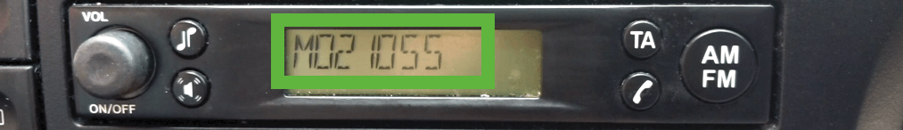

How to Get Your Radio Code.
Written By Grant Daly on
How to get a Ford Radio Code
Unlocking Your Ford radio could not be easier to do online, it takes approximately 15 minutes to get your ford radio unlock code, this includes everything from finding your serial number to Generating a Ford Radio Code, get started now.
Ford Radio Code Guide See more...
Step 1
Obtaining your Ford Serial Number From The Screen.
Turn on your radio and hold the preset buttons 1 & 6 for 2 to 3 seconds, The screen will cycle through a sequence of numbers, wait until your serial shows and make note. It will look like one of the reference images.
The next step would be holding buttons 2 & 6. The information will come straight onto your screen using this method but does not always work.
Ford Serial Number Still Not Showing on Screen? See Below...
It is very easy to remove your stereo. You will need a set of radio release keys. These inexpensive tools and are £3.00, you can obtain them from Amazon. Once you have the radio release keys, push them into the 4 slots of the radio (See image), apply a pressure and the radio will release from the dashboard. The radios label will be located on the back of your radio.
Ford radio serial numbers start with V/M/BP/C7 for example V123456. The TravelPilot models are a longer serial number. An example of this would be C73F0961 C 0536857. If your radio is a TravelPilot, please see our Ford TravelPilot page.
How to get a Radio Code for Nissan
Nissan serial numbers are displayed on screen in most cases, this guide will show you just how easy it can be to unlock & generate a Nissan Radio Code.
Nissan Radio Code Guide See more...
Nissan Connect / Sat Nav
- Turn the ignition switch ON.
- To get the information on the screen of your radio, you will need to input an incorrect code into the system 3x times the codes input will do any harm to your radio but will lock it for 60 minutes.

- The 'Serial number', 'Device number' and 'Date'. will display on the radios screen. (Please see image for reference).
- Make note of all the numbers as they are displayed, you will need all the information (including the date) to unlock your radio.
 Nissan Connect Bosch systems only display the information on-screen not on the label.
Nissan Connect Bosch systems only display the information on-screen not on the label.
Nissan Daewoo Radio
- Ensure the ignition switch ON.
- it will show 'Radio Code:'.
- To display information we need to decode your radio, you will need to enter an incorrect code in 3x times.

- The 'Serial number', 'Part number' and 'Date' will display on the radio. (Please see image for reference).
- Make note of these numbers, as you will need them to unlock your radio.
Nissan Clarion Radio
This model of radio requires taking out to get your serial numbers, it is quite simple to remove your Nissan radio. You will need t a flat-head screwdriver for prying the panels off the dash to Access the radio. Clarion radio removal keys are ideal for freeing the head unit from the mount.
Different car radio models require differently shaped removal keys.
For further help in removing your Nissan Clarion radio, please see this YouTube video

Method 4 - Nissan Radio Code By The Label
To find your Nissan serial number, you will need to remove the radio using radio release keys. Once the radio has been removed you will need to locate the radios label, which is on the top or side of the radios casing.


How to get your Audi Radio Code
Audi Navigation radios can display the serial number on screen, standard Audi radios must be removed and the serial number is located on the label on the back of the radio. This is very easy to do, our full guide will go through everything that you need to unlock you Audi radio the easy way.
Full Audi Radio Code Guide See more...
Unlock Your Audi Radio Code By Serial Number
Method 1 (Standard Radio)
It is quite simple to remove your radio. You will need a set of radio release keys. These are inexpensive tools, which can be purchased from Amazon. Push them into the 4 slots in each corner of the radio (See image), apply pressure and the radio will release from the dashboard.

Audi radio serial numbers consist of 14 letter/numbers for example AUZ1Z1F6412082. A way of knowing your Audi serial is that they all Begin "AUZ"
Audi Navigation Radio
Getting Your Audi serial on the radios display.
With the Audi Navigation Plus system the serial will be displayed on screen oppose to taking out the radio unit, It is located at the bottom center of your radios display.
How to Enter your Audi Radio Code
Audi Symphony Radio
- Once your radio is on and appears in “SAFE” mode
- Repeatedly press the P.SCAN and RBDS buttons, holding them down, until “1000” lights up. Release the buttons. (Do not continue to hold or press the buttons, or your radio unit will think you are entering the decode "1000")
-
- Repeatedly press button 1 until the correct first digit of the code is displayed.
- Repeatedly press button 2 until the correct second digit of the code is displayed.
- Repeatedly press button 3 until the correct third digit of the code is displayed.
- Repeatedly press button 4 until the correct fourth digit of the code is displayed.
- If you have entered the code correctly on the radios display, press the P.SCAN and RBDS simultaneously again, holding down until SAFE is displayed.
Audi Concert Radio
- Once your radio is on and appears in “SAFE” mode
- Repeatedly press the FM 2 and RDS buttons, holding them down, until “1000” lights up. Release the buttons. (Do not continue to hold or press the buttons, or your radio unit will think you are entering the decode "1000")
- Repeatedly press button 1 until the correct first digit of the code is displayed.
- Repeatedly press button 2 until the correct second digit of the code is displayed.
- Repeatedly press button 3 until the correct third digit of the code is displayed.
- Repeatedly press button 4 until the correct fourth digit of the code is displayed.
- If you have entered the code correctly on the radios display, press the FM 2 and RDS repeatedly again, holding down until SAFE is displayed.
Audi Delta CC Radio
- Once your radio is on and appears in “SAFE” mode
- Repeatedly press FM (1/2) and DX buttons, holding them down, until “1000” lights up. Release the buttons. (Do not continue to hold or press the buttons, or your radio unit will think you are entering the decode "1000")
-
- Repeatedly press button 1 until the correct first digit of the code is displayed.
- Repeatedly press button 2 until the correct second digit of the code is displayed.
- Repeatedly press button 3 until the correct third digit of the code is displayed.
- Repeatedly press button 4 until the correct fourth digit of the code is displayed.
- If you have entered the code correctly on the radios display, press the FM 2 and RDS repeatedly again, holding down until SAFE is displayed.
Audi Bose Radio
- Once your radio is on and appears in “SAFE” mode
- Repeatedly press FM 1 and AM buttons, holding them down, until “1000” lights up. Release the buttons. (Do not continue to hold or press the buttons, or your radio unit will think you are entering the decode "1000")
-
- Repeatedly press button 1 until the correct first digit of the code is displayed.
- Repeatedly press button 2 until the correct second digit of the code is displayed.
- Repeatedly press button 3 until the correct third digit of the code is displayed.
- Repeatedly press button 4 until the correct fourth digit of the code is displayed.
- The 1st button will only be a 1 or left blank, the following three digits will be number 1 through 9.
- If you have entered the code correctly on the radios display, press the FM 1 and AM repeatedly again, holding down until SAFE is displayed.
Audi Sound Choice Radio
- Once your radio is on it should appear “CODE”
- If you press the Preset Station Selector Button “Code” will be replaced by “0000”
-
- Repeatedly press button 1 until the correct first digit of the code is displayed.
- Repeatedly press button 2 until the correct second digit of the code is displayed.
- Repeatedly press button 3 until the correct third digit of the code is displayed.
- Repeatedly press button 4 until the correct fourth digit of the code is displayed.
- The 1st button will only be a 1 or left blank, the following three digits will be number 1 through 9.
- Make sure to enter the code in the space of 1 minute or it will interrupt the process.
- If you have entered the code correctly on the radios display, press the fifth button.
*Free Audi Radio Code instructions are also sent after purchase
How do i get the Radio Code for my Renault
Renault radios must be taken out to decode your Renault online. This is very easy to do and our guide will go through every step involved in obtaining your Renault serial number to entering your code.
Full Renault Radio Code Guide See more...
How to Find Your Renault Serial Number.
It is quite simple to remove your radio. You will need a set of radio release keys. These are inexpensive and are around £2.00, you can obtain these from Amazon. Once you have the radio release keys, press them into the 4 slots in each corner of the radio, apply a pressure and the radio will release from the dashboard.
The security code is one letter followed by 3 digits for example N123. This may be part of a larger serial/bar-code number starting with 8200/7700/2811. An example of this would be 8200607918TJ109. Please see images below for reference.
How to Enter radio code for Renault
Using The Buttons On The Unit
- Switch on the CD or cassette player.
- The display should show 0 0 0 0.
- Press 1st then 2, 3 and 4 repeatedly until each digit of your code appears on the display
- Press and hold 6 to activate the unit.
Using The Stalk Control
- Switch on the CD or cassette player.
- The display should show 0 0 0 0.
- Rotate the thumbwheel for the 1st digit of the code.
- Then press the bottom button to move on.
- Rotate the thumbwheel for the 2nd digit of the code.
- Then press the bottom button to move on.
- Rotate the thumbwheel for the 3rd digit of the code.
- Then press the bottom button to move on.
- Rotate the thumbwheel for the 4th digit of the code.
- Then press & hold the bottom button button to activate.